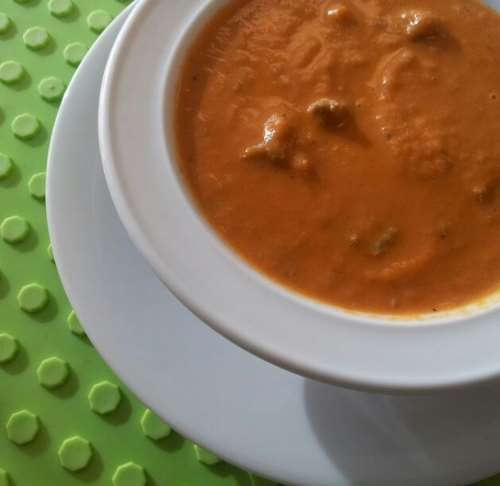

Tomaten Soep
Tomaten soep kan prima bij een avondmaaltijd, maar is ook een makkelijk gerecht voor een buffet zijn.
ingrediënten
- 8 rijpe Romatomaten
- 1 eetlepel olijfolie
- 1 ui, fijngesneden
- 2 teentjes knoflook, fijngesneden
- 3/4 van een groot blikje tomatenpuree
- 2 laurierblaadjes
- 1-2 theelepels Italiaanse kruiden
- 1 theelepel suiker
- 250 ml water
- 10 blaadjes basilicum, klein gesneden
- 100 ml slagroom
- Voor de balletjes
- 200 gr rundergehakt
- zout en peper, naar smaak
- 3 scheutjes maggie
- 1 ei
Bereidingswijze
- Was de tomaten en ontvel ze door aan de onder- en bovenkant een kruisje in te snijden met een scherp mes. Breng een pan met water aan de kook en dompel de tomaten hier 30 seconden in onder. Dompel ze daarna in koud water. Nu kun je de tomaten makkelijk ontvellen. Snij de tomaten in stukjes en verwijder de harde kern.
- Zet een grote braadpan of soeppan op middelhoog vuur. Verhit de olijfolie en fruit de ui en knoflook, ong. 3 minuten. Voeg daarna de tomatenblokjes, de helft van de tomatenpuree, laurierblaadjes, Italiaanse kruiden, en suiker toe. Roer goed, zet het vuur zacht en laat 5 - 10 minuten pruttelen terwijl je af en toe roert.
- Voeg dan 250 ml water toe, en breng de soep verder op smaak met zout, peper, en de rest van de tomatenpuree. Breng het geheel aan de kook, zet het vuur weer zacht en laat 20 minuten sudderen.
- Maak de balletjes terwijl de soep suddert. Pak een schone kom en meng hierin het rundergehakt samen met zout, peper, een paar scheutjes maggie en een ei. Draai balletjes van het mengsel.
- Vis de laurier uit de soep en pureer de soep met een staafmixer.Voeg daarna de fijngesneden basilicum toe, en roer.
- Voeg de balletjes toe aan de soep, en laat nog even sudderen tot de balletjes gaar zijn. Laat de soep daarna iets afkoelen (mag niet meer koken) en voeg dan de slagroom toe. Controleer nog even of de soep nog wat zout, peper, Italiaanse kruiden, basilicum of tomatenpuree kan gebruiken. Smakelijk!

Tip Lekker als je het warm eet.